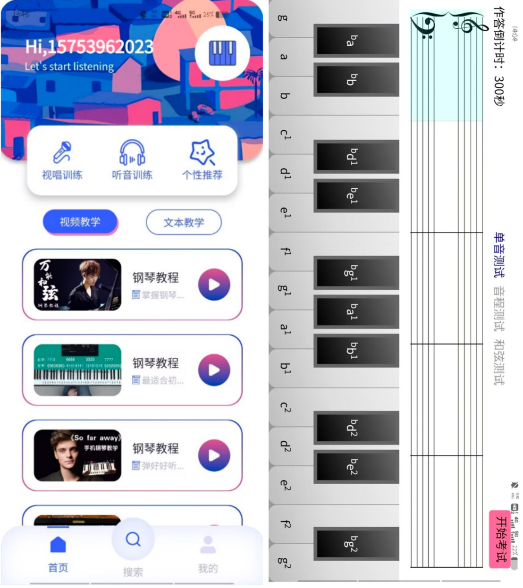

|
Ruichen Zhang I'm an undergraduate student at Shandong University in China,Shandong University is one of the first tier schools(Project 985) in China. Major: Computer Science and Technology, School of Mechanical, Electrical and Information Engineering At University I've worked with Prof.Lipeng Song on communication encryption, information hiding, adversarial attack, and Prof.Bin Jiang on App/web development,and Prof.Fei Yang on diffusion model,and on MR |
{kind=link}
ResearchI'm interested in Computer Vision, Multimodal Machine Learning, Robotics, and Biomedical AI. Most of my research is related to deep learning. Representative projects are highlighted. |

|
Perceptual Similarity guidance and text guidance optimization for Editing Real Images using Guided Diffusion Models
Guided by Yujia Chen
Image editing optimization based on perceptual similarity guidance and text guidance on stable diffusion. |

|
Conditional Image Generation Contest
Guided by Yongxin Wang A hackathon project. I do an image generation contest. First take a mug shot with the camera or choose to use a randomly generated mug shot, the goal of the competition is to let the participants describe and generate their own pictures, refer to the machine description of their own photos and constantly modify the description, the picture with the highest similarity wins. |

|
Artificial Intelligence Forged Audio and Video Information Traceability Technology
Guided by Prof.Lipeng Song This project is a major national science and technology project of China,I participated in the research of sub-problems and co-authored the paper Zero-shot Voice Conversion with Instance Normalization by Generative Adversarial On voice conversion, zero-shot,we propose an MD-VC model which introduces multiple discriminators based on generative adversarial networks. It improves the conversion quality through adversarial training. |

|
Coastal vessel data analysis
Guided by Prof.Bin Jiang I'm interning in the Information Department of Municipal Public Security Bureau doing requirements analysis, module design, front-end code writing, the front-end and back-end testing of data dashboard ,and Radar data reception and processing. |

|
Design and Implementation of Covert Communication based on Intelligent Voice System
Guided by
Prof.Lipeng
Song
A National level student project. By attacking the neural network of DeepSpeech , hidden information is concealed in audio files to achieve covert communication. Hidden seed is concealed in audio files to achieve real-time voice encrypet communication co-authored the paper Design and Implementation of Covert Communication based on Intelligent Voice System |

|
Enterprise Learning platform
I'm interning in Sinosoft Company Limited ,Participated in the design, documentation, front-end and back-end code writing and testing of the Message Center.Completed authority management, edit and use of message templates, message distribution and the application of message middleware. |
|  |
"Shiyin" Music training App
To support music education in poor areas of Shandong Province, we developed a music training app free of charge that includes functions of sight-singing, music dictation, personalized recommendations, and endless mode Responsible for audio processing, pitch recognition, scoring, randomized music synthesis based on rules and interface design. |
|
|
Research on Adversarial Examples Attack and Defense for Intelligent Speech Systems
Prof.Lipeng
Song
By attacking neural networks and adding small disturbances that are difficult to perceive based on DeepSpeech deep learning open-source speech-to-text engine model, antagonistic audio is constructed to interfere with the target engine's recognition of audio. |

|
Constructing an Aquarium Rehabilitation Training Model for Children with ASD based on MR Technology
Proposed a new MR Rehabilitation training method for children with ASD .We collect data such as eye tracking, limb motion capture, and touch deviation, and use neural networks to assist diagnosis. In addition, we designed a unique MR Game and completed a practical test in the hospital. |
|
|
Qomolangma broadcasting platform
Completed the database-based web platform, and realized functions of audio playing, searching, collecting, commenting, scoring, audio uploading, avatar uploading, email verification, casting chart, playlist production, etc. The project obtained the highest score among the whole CS department. |

|
Forbidden City modeled by maya
Complete the modeling and lighting animation of the Forbidden City by maya , modeling and mapping of single
tiles or single ridge animals, and the restoration effect of railings, walls and roofs is good.
The project obtained the highest score among the whole CS department. |
|
|